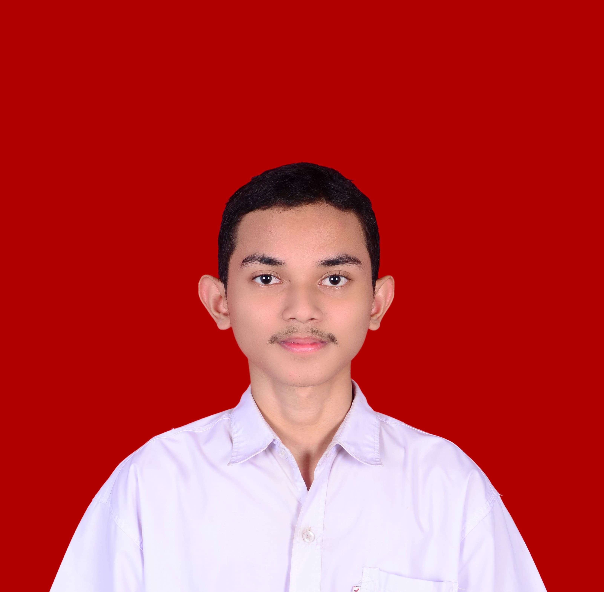

Curriculum Vitae |
|
 Saidil Mustafa Lhoksukon, 28 Maret 2006 |
Informasi PribadiAlamat: Lhoksukon, Aceh Utara, Indonesia Email: bojesmustafa@.com Telepon: +62 812-3456-7890 Website: bojesmoestave-github.io |
Pendidikan
|
Pengalaman
|
Keahlian
|
|
© 2025 Saidil Mustafa. All rights reserved. |